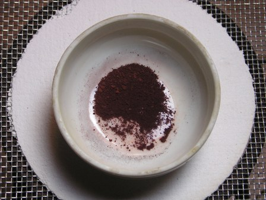

Alcune sostanze si comportano in modo strano a seconda delle condizioni a cui sono sottoposte: c'è chi mostra fluorescenza, chi fosforescenza, chi piezoelettricità, chi piezoluminescenza, chi termoconduttività... ecc.... e c'è chi mostra il fenomeno del termocromatismo (o termocromismo), cioè il colore mostrato dalla sostanza è funzione della temperatura.
Vedere una sostanza colorata che cambia completamente aspetto scaldandola è suggestivo.
L'esempio più classico e semplice è dato dall'ossido di zinco, che è bianchissimo a freddo e giallo limone se scaldato a qualche centinaio di gradi.
Ma c'è un composto particolare e poco comune che cambia nettamente colore a una temperatura molto più bassa e gestibile, circa 70 gradi, ed è il tetraiodomercurato rameoso Cu2HgI4.
Questo composto è di un bel rosso vermiglione a freddo e diventa marrone scuro, quasi nero, alla temperatura di transizione.
Il motivo del cambiamento di colore risiede nella struttura cristallina, che è variabile a seconda della temperatura e permette migrazione di ioni da una parte all'altra del cristallo tetraedrico.
Come vedremo questa migrazione produce anche una notevole variazione nella conduttività elettrica tra lo stato a freddo e a caldo.
Non è questo il luogo adatto ad approfondimenti teorici, che si possono reperire facilmente in rete, e passiamo quindi subito alla fase sperimentale pratica con questa interessante sostanza.
Innnzitutto occorre produrlo, il Cu2HgI4!
Vi sono un paio di metodi, che essenzialmente combinano lo ioduro di mercurio con lo ioduro di rame in ambiente riducente.
Il metodo migliore parte da HgCl2, che addizionato di ioduro di potassio in eccesso forma lo iodomercurato di potassio, K2HgI4 solubile; si aggiunge poi solfato di rame CuSO4 e nella soluzione è fatta passare una corrente di anidride solforosa SO2 finchè tutto lo iodomercurato rameoso rosso è precipitato.
Questo metodo presuppone però l'impiego di SO2 gas, che è molto scomodo.
Un metodo alternativo più semplice, quello che ho seguito, è il seguente:
- in una beuta da 50 ml sciogliere 1,25 g di CuSO4 in 10 ml di acqua leggermente acidulata con acido acetico; aggiungendo a questa una soluzione di 2 g di KI in 10 ml di acqua si formerà un precipitato bianco di ioduro rameoso CuI. Aggiungere alla miscela 0,4 g di sodio solfito Na2SO3 disciolti in una ventina di ml di acqua, mescolare bene e filtrare il precipitato su buchner, lavando una volta.
Sciogliere in un becker da 150 ml 0,81 g di nitrato di mercurio Hg(NO3)2 in 50 ml di acqua e aggiungervi 1 g di KI sciolti in 50 ml di acqua; si formerà un precipitato rosso di ioduro di mercurio HgI2.
Aggiungere a questa sospensione lo ioduro rameoso prima preparato e portare a leggera ebollizione per un quarto d'ora.
Filtrare a caldo il precipitato rossastro, lavando bene, e lasciar essicare.
Scaldare in capsula a bagno maria bollente il prodotto, mescolandolo con una spatolina per qualche minuto, fino a sicura essicazione; durante il riscaldamento si nota il primo cambiamento di colore a circa 70° e da questo momento in poi il termocromatismo è perfettamente reversibile, un bel rosso a freddo e marrone molto scuro a caldo.
Con un sistema simile a quello usato per determinare il punto di fusione di una sostanza, si può verificare l'esatta temperatura di transizione, che dovrebbe essere tra i 67° e i 71°.
Ecco le foto di una piccola quantità di Cu2HgI4 nelle due situazioni freddo-caldo: la variazione di colore, pur con un punto di transizione così basso, è veramente marcata!


Le caratteristiche di questo interessante composto iodo-cupro-mercurico non finiscono qui: come dicevo all'inizio, esso al variare della temperatura mostra anche una notevole variazione di conduttività elettrica, che ho voluto investigare quantitativamente nei limiti dei miei mezzi, costruendo un piccolo dispositivo espressamente dedicato a questa prova.
E' quanto vedremo nella seconda parte di questo lavoro.